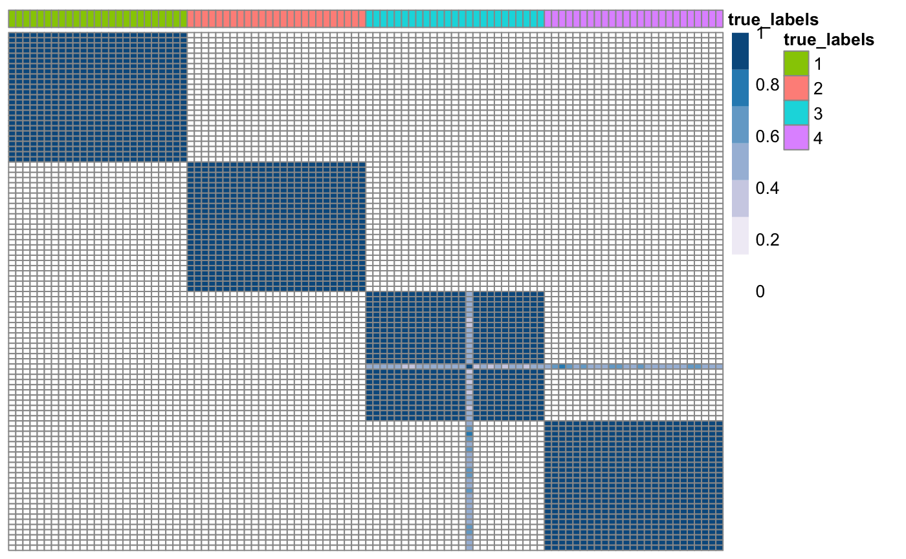
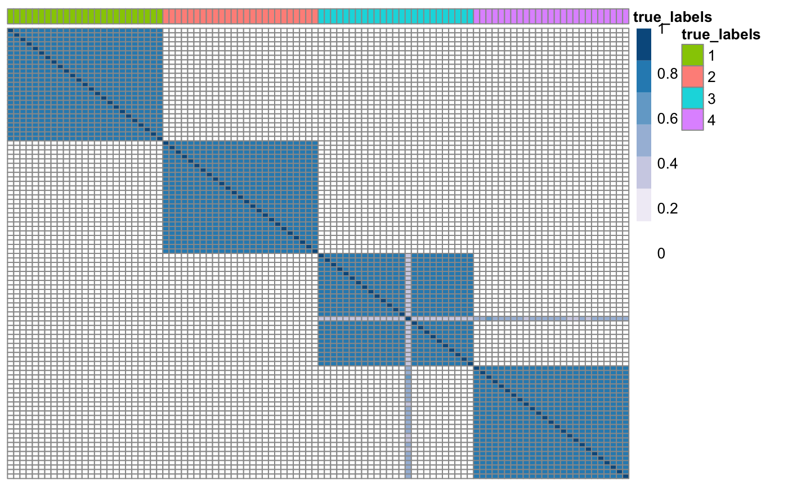

vignettes/klic-vignette.Rmd
klic-vignette.RmdThe R package klic (Kernel Learning Integrative Clustering) contains a collection of tools for integrative clustering of multiple data types.
The main function in this package is klic. It takes as input a list of datasets and builds one kernel per dataset, using consensus clustering. The kernels are then combined through localised kernel k-means to obtain the final clustering. The function also gives the user the option to try several different values for the number of clusters both at the level of the individual datasets and for the final clustering. This is the simplest way to perform Kernel Learning Integrative Clustering. However, users may want to include other types of kernels (instead of using only those derived from consensus clustering) or try different parameters for consensus clustering and include all the corresponding kernels in the analysis. Therefore, we also make available some of the functions needed to build a customised KLIC pipeline, that are:
spectrumShift. This function takes as input any symmetric matrix (including co-clustering matrices) and checks whether it is positive semi-definite. If not, the eigenvalues of matrix are shifted by a (small) constant in order to make sure that it is a valid kernel.
lmkkmeans. This is a function implemented by Gonen and Margolin (2014) that performs localised kernel k-means on a set of kernel matrices (such as -appropriately shifted- co-clustering matrices, for example).
The other function needed for this is consensusCluster. This function can be found in the R package coca and is used to perform consensus clustering on one dataset and obtain a co-clustering matrix (Monti et al. 2003).
Other functions included in the package are:
kkmeans, another function implemented by Gonen and Margolin (2004) to perform kernel k-means with only one kernel matrix (Girolami, 2002);copheneticCorrelation, to calculate the cophenetic correlation of a similarity matrix.First, we generate four datasets with the same clustering structure (6 clusters of equal size) and different levels of noise.
## Load synthetic data data1 <- as.matrix(read.csv(system.file("extdata", "dataset1.csv", package = "klic"), row.names = 1)) data2 <- as.matrix(read.csv(system.file("extdata", "dataset2.csv", package = "klic"), row.names = 1)) data3 <- as.matrix(read.csv(system.file("extdata", "dataset3.csv", package = "klic"), row.names = 1)) data <- list(data1, data2, data3) n_datasets <- 3 N <- dim(data[[1]])[1] true_labels <- as.matrix(read.csv(system.file("extdata", "cluster_labels.csv", package = "klic"), row.names = 1))
Now we can use the consensusClustering function to compute a consensus matrix for each dataset.
## Compute co-clustering matrices for each dataset CM <- array(NA, c(N, N, n_datasets)) for(i in 1: n_datasets){ # Scale the columns to have zero mean and unitary variance scaledData <- scale(data[[i]]) # Use consensus clustering to find the consensus matrix of each dataset CM[,,i] <- coca::consensusCluster(scaledData, K = 4, B = 50) } ## Plot consensus matrix of one of the datasets true_labels <- as.factor(true_labels) names(true_labels) <- as.character(1:N) CM3 <- as.matrix(CM[,,3]) rownames(CM3) <- colnames(CM3) <- names(true_labels) klic::plotSimilarityMatrix(CM3, y = as.data.frame(true_labels))

Before using kernel methods, we need to make sure that all the consensus matrices are positive semi-definite.
## Check if consensus matrices are PSD and shift eigenvalues if needed. for(i in 1: n_datasets){ CM[,,i] <- klic::spectrumShift(CM[,,i], verbose = FALSE) } ## Plot updated consensus matrix of one of the datasets true_labels <- as.factor(true_labels) names(true_labels) <- as.character(1:N) CM3 <- as.matrix(CM[,,3]) rownames(CM3) <- colnames(CM3) <- names(true_labels) klic::plotSimilarityMatrix(CM3, y = as.data.frame(true_labels))

Now we can perform localised kernel k-kmeans on the set of consensus matrices using the function lmkkmeans to find a global clustering. This functions also need to be provided with a list of parameters containing the prespecified number of clusters and the maximum number of iterations for the k-means algorithm.
## Perform localised kernel k-means on the consensus matricess parameters <- list() parameters$cluster_count <- 4 # set the number of clusters K parameters$iteration_count <- 100 # set the maximum number of iterations lmkkm <- klic::lmkkmeans(CM, parameters)
The output of lmkkmeans contains, among other things, the final cluster labels. To compare two clusterings, such as for example the true clustering (that is known in this case) and the clustering found with KLIC, we suggest to use the adjustedRandIndex function of the R package mclust. An ARI close to 1 indicates a high similarity between the two partitions of the data.
## Compare clustering found with KLIC to the true one mclust::adjustedRandIndex(true_labels, lmkkm$clustering)
## [1] 1If the global number of clusters is not known, one can find the weights and clusters for different values of K and then find the one that maximises the silhouette.
## Find the value of k that maximises the silhouette # Initialise array of kernel matrices maxK = 6 KM <- array(0, c(N, N, maxK-1)) clLabels <- array(NA, c(maxK-1, N)) parameters <- list() parameters$iteration_count <- 100 # set the maximum number of iterations for(i in 2:maxK){ # Use kernel k-means with K=i to find weights and cluster labels parameters$cluster_count <- i # set the number of clusters K lmkkm <- klic::lmkkmeans(CM, parameters) # Compute weighted matrix for(j in 1:dim(CM)[3]){ KM[,,i-1] <- KM[,,i-1] + (lmkkm$Theta[,j]%*%t(lmkkm$Theta[,j]))*CM[,,j] } # Save cluster labels clLabels[i-1,] <- lmkkm$clustering } # Find value of K that maximises silhouette maxSil <- coca::maximiseSilhouette(KM, clLabels, maxK = 4) maxSil$k
## NULLThe same can be done simply using the function klic
## [1] "All datasets contain the same number of observations 100."
## [1] "We assume that the observations are the same in each dataset\n and that they are in the same order."
## [1] "*** Generating similarity matrices ***"
##
|
| | 0%
|
|======================= | 33%
|
|=============================================== | 67%
|
|======================================================================| 100%
## [1] "*** Choosing the number of clusters for the global clustering ***"
##
|
| | 0%
|
|============== | 20%
|
|============================ | 40%
|
|========================================== | 60%
|
|======================================================== | 80%
|
|======================================================================| 100%
## [1] "Global K = 4"klic$globalK
## [1] 4kkmeans is the analogous of lmkkmeans, for just one dataset at a time.
## Set parameters of the kernel k-means algorithm parameters <- list() parameters$cluster_count <- 4 parameters$iteration_count <- 100 ## Run kernel k-means kkm <- klic::kkmeans(CM[,,3], parameters) ## Compare clustering to the true labels clusterLabels <- kkm$clustering mclust::adjustedRandIndex(true_labels, lmkkm$clustering)
## [1] 0.9103916We also included copheneticCorrelation, a function that calculates the cophenetic correlation coefficient of a similarity matrix:
## Compute cophenetic correlation coefficient for each consensus matrix ccc <- rep(NA, n_datasets) for(i in 1:n_datasets){ ccc[i] <- klic::copheneticCorrelation(CM[,,i]) } ccc
## [1] 0.9963582 0.9943875 0.9971555The cophenetic correlation coefficient is a measure of how faithfully hierarchical clustering would preserve the pairwise distances between the original data points.
Cabassi, A. and Kirk, P. D. W. (2020). Multiple kernel learning for integrative consensus clustering of ’omic datasets. Bioinformatics, btaa593.
Girolami, M. (2002). Mercer kernel-based clustering in feature space. IEEE Transactions on Neural Networks, 13(3), pp.780-784.
Gonen, M. and Margolin, A. A. (2014). Localized Data Fusion for Kernel k-Means Clustering with Application to Cancer Biology. NIPS, (i), 1–9.
Monti, S. et al. (2003). Consensus Clustering: A Resampling-Based Method for Class Discovery and Visualization of Gene. Machine Learning, 52(i), 91–118.
The Cancer Genome Atlas (2012). Comprehensive molecular portraits of human breast tumours. Nature, 487(7407), 61–70.